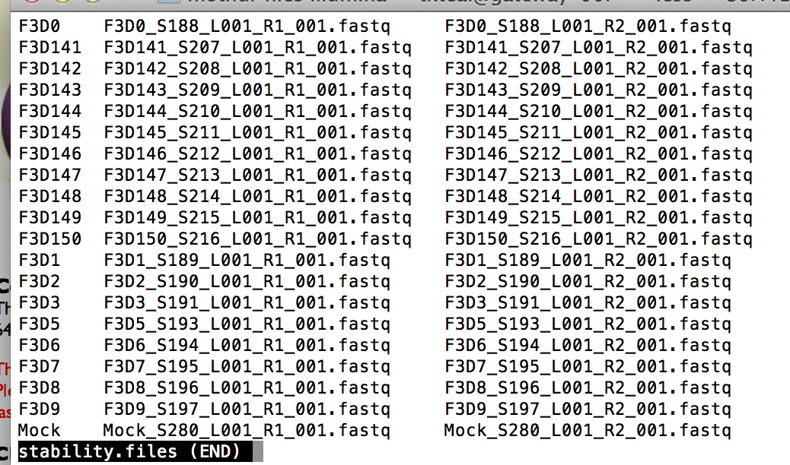

mothur tutorial
Logistics
Instructor: Tracy Teal tkteal@datacarpentry.org @tracykteal
Real-time notes for the class. These will stay there after the workshop too.
Etherpad: https://etherpad.mozilla.org/Hj6zW6Ni3h
shell cheat sheets:
* http://fosswire.com/post/2007/08/unixlinux-command-cheat-sheet/
* https://github.com/swcarpentry/boot-camps/blob/master/shell/shell_cheatsheet.md
Overview of mothur
What you can use it for and what is the workflow in slides
http://tracykteal.github.io/mothur-tutorial/mothur_stamps_presentation.pdf
Running mothur
You can run mothur on your own computer. To do this, you would download mothur
http://www.mothur.org/wiki/Download_mothur
(we’re not going to talk about the GUI version)
But you can also run mothur on a server, Amazon or an HPCC.
The advantage of this is that it’s not taking up computational resources on your own computer.
You could even start something and then close your computer and go home, or I mean go do some lab work.
You can also run mothur from within IPython Notebook with ipython-mothurmagic
https://github.com/SchlossLab/ipython-mothurmagic
For this class, we can run them on the MBL servers.
Let’s get ready to run mothur.
If you’re on the servers, they uses the module system, so type
module load mothur
And then type
mothur
If you’re on your computer, you would go to a terminal, go in to the mothur directory and type
./mothur
Now you’re in mothur, and we can start!
You should get the command prompt
mothur >
Green sticky note up if you have the mothur command prompt
Once you have it up the first thing we’ll do is quit mothur, so type
quit()
If you’re in mothur, or really any command line environment, you can type Ctrl^C to quit that command
** Getting help
mothur manual - http://wiki.mothur.org/wiki/Mothur_manual
mothur user forum - http://www.mothur.org/forum/
Set up your work environment
How are you going to keep track of all the commands you’re running.
Be nice to the you of 6 months or even a week from now!
Computational processes need lab notebooks just like lab work.
- Evernote
- OneNote
- Word
- a text editor
- IPython notebook
- photographic memory
In mothur if you run an analysis with different parameters in the same directory, it will write over your old analysis.
mothur does always write out logfiles, so you can keep track with those some.
mothur example
First let’s create a directory for our analysis. mothur generates a lot of files, so it’s best to create a new directory for each analysis.
At the terminal, type
cd
Now you’re in the top level of your home directory.
Type pwd to see where you are and ls to see what’s in there
If you’re having an existential crisis, you can type whoami
Now we’ll make a directory for our analysis. We can creatively call it ‘mothur’
mkdir mothur
Go in to that directory
cd mothur
Copy the data in to your directory
cp -r /class/stamps-shared/mothur/data/MiSeq_SOP .
or if it’s in your downloaded file directory, you might type
cp -r ~/Downloads/MiSeq_SOP .
The ~ represents your home directory. The place where you start.
Go in to the MiSeq_SOP directory
cd MiSeq_SOP
Remember about tab complete! It works in mothur too, so it will be your friend. Also, up arrow is awesome.
Go to the mothur MiSeq SOP. This is what we’re going to go through.
http://www.mothur.org/wiki/MiSeq_SOP
You also are welcome to use your own data as we go through things, but if you have too much data, each step
might take longer than we have planned.
We already have the files we need for this example, but let’s take a look at some of them. To see what files you have type
ls
Now you see a list of files.
We have the fastq files. Those are the files you get back from the sequencing center. Let’s take a look at those.
cat F3D0_S188_L001_R1_001.fastq
or
less F3D0_S188_L001_R1_001.fastq
Then you have the stability.files file. That is a file that tells mothur what paired end sequences go together and what the sample name is.
Let’s take a look at that file.
cat stability.files

You can see that the format is a tab delimited file with the sample name in the first column,
the forward read in the second column and the paired end read in the third column.
You could create this file in Excel, then save it as a tab-delimited file.
It doesn’t have to be called stability.file. You can call it whatever you want. The ‘stability’ part is just what it’s named in the example.
Now let’s start mothur again.
If you’re on the servers, you can just type
mothur
If you’re on your own computer, you need to telll the computer where it can find mothur, so
it would be something like
/Applications/mothur/mothur or
~/Downloads/mothur/mothur
And we’re back in mothur, and should be in the directory with all our data files.
To make sure that true type
system(ls)
You should see the list of FASTQ files and the stability.files
To call command line commands like this from within mothur, you can use system()
** Put up your green sticky note when you’ve done this
Now let’s start going through the protocol
** Often the summary.seqs() commands take awhile. Just wait and eventually you’ll get the result
We’re following the MiSeq SOP now, but we’ll go through the first few commands, so that you can see how to access the data and get the results file in your directory.
First we’ll combine the paired-end reads together.
For this we need the FASTQ files and the stability.files file that tells mothur what reads go together.
mothur > make.contigs(file=stability.files, processors=8)
You’ll wait a bit, and get some output.
Four files will be created:
* stability.trim.contigs.fasta - the FASTA file of the assembled paired end sequences
stability.contigs.report - a report for each assembled contig of the overlap and number of Ns
stability.scrap.contigs.fasta - sequences that didn’t pair
* stability.contigs.groups - a file with information on what sequence belongs to what sample
- files are ones that will be used in downstream analysis.
In general, the *.fasta and *.groups files are the ones you’ll need in the next steps.
——— BREAK ————-
We’re going to pause here and when we come back, we’ll start going through the workflow
Notes along the workflow
At the pcr.seqs command, I’ve already created the silva.v4.fasta file in the shared folder.
You will need to reference it specifically with its path information in the align.seqs step
mothur > align.seqs(fasta=stability.trim.contigs.good.unique.fasta, reference=/class/stamps-shared/mothur/ref/silva.bacteria/silva.v4.fasta)
Alternatively, you can just put it in your mothur directory and work with it there.
This is sort of less than ideal, because you’d have to copy it around every time you did an analysis
mothur > system(cp /class/stamps-shared/mothur/ref/silva.bacteria/silva.v4.fasta .)
mothur > align.seqs(fasta=stability.trim.contigs.good.unique.fasta, reference=silva.v4.fasta)
This is the same at the classify.seqs() command
mothur > classify.seqs(fasta=stability.trim.contigs.good.unique.good.filter.unique.precluster.pick.fasta, count=stability.trim.contigs.good.unique.good.filter.unique.precluster.uchime.pick.count_table, reference=/class/stamps-shared/mothur/ref/trainset9_032012.pds.fasta, taxonomy=/class/stamps-shared/mothur/ref/trainset9_032012.pds.tax, cutoff=80)
Creating the distance matrix and doing the clustering are the time and memory intensive steps.
Once we create the shared file, there are several things we can do. Let’s take a look at the shared file though. Let’s open it in Excel. stability.trim.contigs.good.unique.good.filter.unique.precluster.pick.pick.pick.an.unique_list.shared
Let’s also look at the list file
stability.trim.contigs.good.unique.good.filter.unique.precluster.pick.pick.pick.an.unique_list.list
There’s been a lot of discussion of what to do with the raw counts:
- subsample
- normalize by sample size
- mixed model
- something else
For this lesson we’re going to subsample
See how many sequences we have
mothur > count.groups()
Lowest is 2441, so we’ll subsample to that size
mothur > sub.sample(shared=stability.trim.contigs.good.unique.good.filter.unique.precluster.pick.pick.pick.an.unique_list.shared, size=2441)
Now we have a new shared file that has been subsampled. If we did the subsampling again, we’d actually get a different new shared file.
** Exercise
Go ahead and try it. Open up your new shared file. Rerun the subsampling and see if the re-subsampled one looks the same. This is easiest if you’re running it on your own computer. Pair up with someone who is if you’re not.
Looking at some of this data
PAST - a GUI statistical package developed by Oyvind Hammer
http://folk.uio.no/ohammer/past/
Running mothur in batch mode
Creating your own ‘stability.file’ for your data
Past the shared file
- Classify
- Alpha and beta diversity
- Data visualization